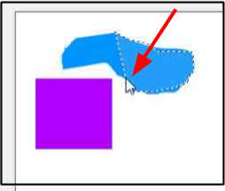

Lasso Select¶
The Lasso Select tool comes in handy when selecting a part of an image that's not perfectly rectangular or elliptical. The Lasso Select tool can be used to draw a free-form border around a selected object within an image.
How to Use the Lasso¶
-
Select the Lasso Select
 from the Tools menu.
from the Tools menu. 
-
Position the cursor on the edge of the element that you want to select, and click and hold the mouse button.

-
Trace around the element while continuing to not release the mouse button while capturing only what you want to retain in your selection. While you trace, a dotted line forms that follows the movement of your mouse. Continue to trace the selection and return to the starting point to close the loop.

-
Release the mouse button and Pinta will finish the selection. If you didn't trace fully back to your start point, a straight line from your endpoint to your startpoint is generated.